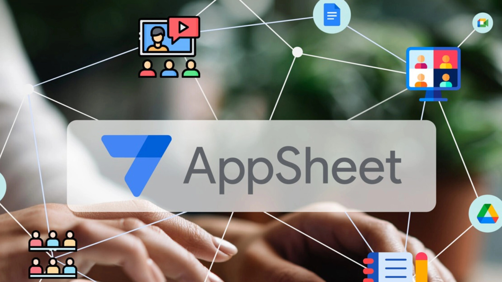
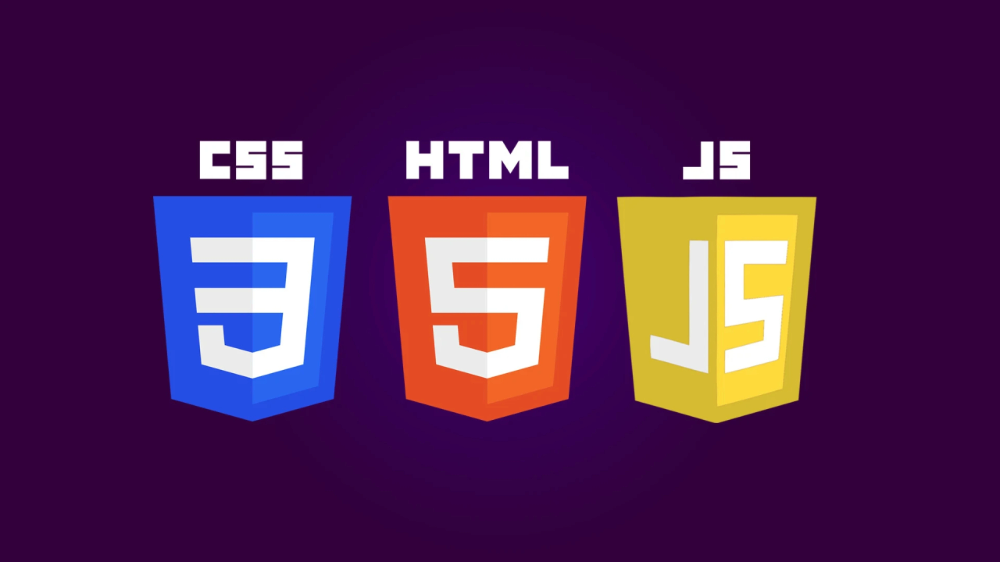

Mahasiswa Informatika yang antusias mengubah ide menjadi baris kode.
Lihat Project SayaKeahlian Utama
Bahasa Pemrograman
C++, Python, SQL
Networking & Sistem
Mikrotik, Linux Server, Cyber Security
Keahlian Lainnya
Pemecahan Masalah, Desain UI Dasar, Manajemen Waktu
Project Unggulan

Automation AI Agent Whatsapp
Mengotomatisasi balasan dengan AI Agent di WhatsApp menggunakan n8n untuk meningkatkan responsivitas.
Lihat Hasil

Appsheet Inventory Management
Membangun aplikasi inventaris gudang dengan Appsheet untuk efisiensi dan mengurangi kesalahan data.
Lihat Hasil

Website Portofolio Pribadi
Merancang website portofolio ini dari nol untuk menampilkan karya saya secara profesional.
Lihat Kode